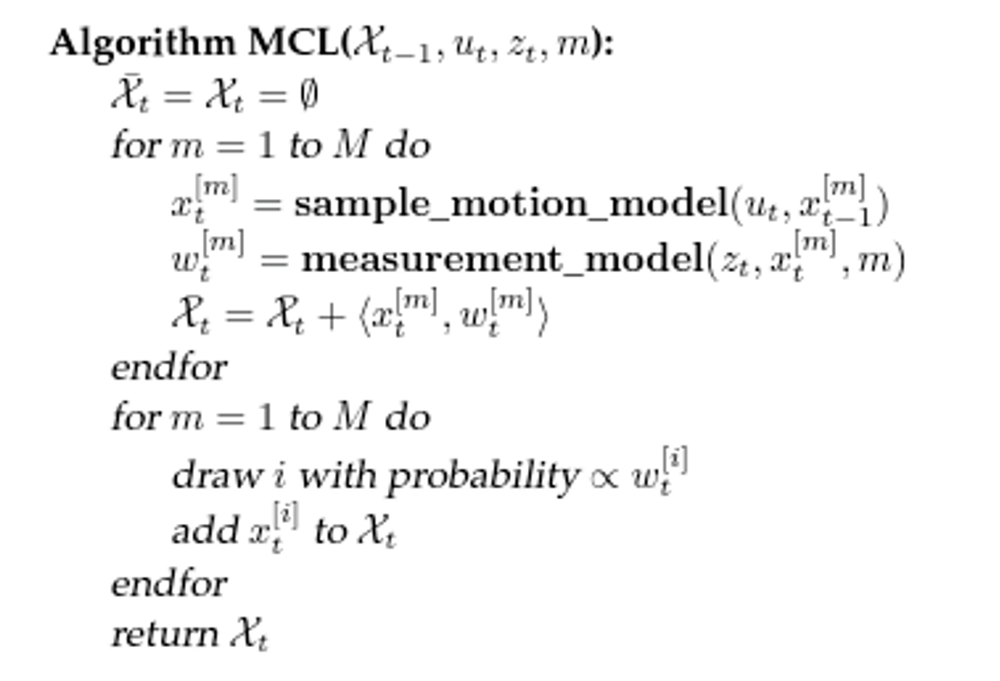
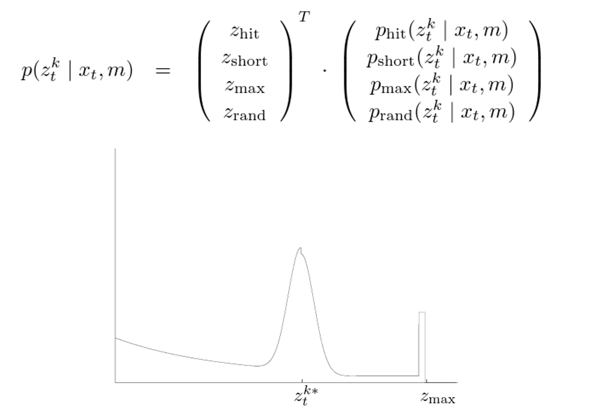

Adaptive Monte Carlo Localization
In this project, I was in a team of 3 to solve the kidnapped robot problem using LiDAR and particle filter method. The kidnapped robot problem is a situation where a robot in operation is carried to an arbitrary location. Thus, our robot needed to recover from severe localization failures. Then it overcome several unknown obstacles and went to the goal position on the map.
Monte Carlo localization, also known as particle filter localization, is basically using samples and weights to represent the possibility of a robot state. A Simple pseudocode is like:
A simple measurement model of LiDAR scan consists of 4 parts: a correct hit measurement with some error distribution, a short measurement because of obstacle blocking, a failed measurement with an infinite distance, and a random measurement result.
We scanned the environment and made the map using the same LiDAR onboard.
The arrows on the screen shows the believed states of the robot. Let it run further to make sure our localization works well.
To deal with the kidnapped problem, the algorithm needs to add some random particles when the belief of the current position becomes too low. Also, reduce the number of particles when the belief is high enough to release computational resources. This method is called Adaptive Monte Carlo Localization.
In this case, the robot's goal is the center of the map, and the red dots on the screen shows the LiDAR measurements.